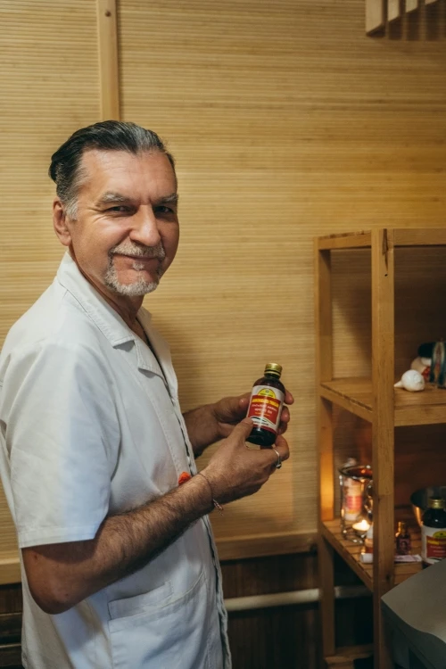
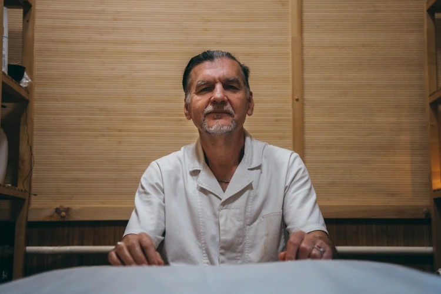
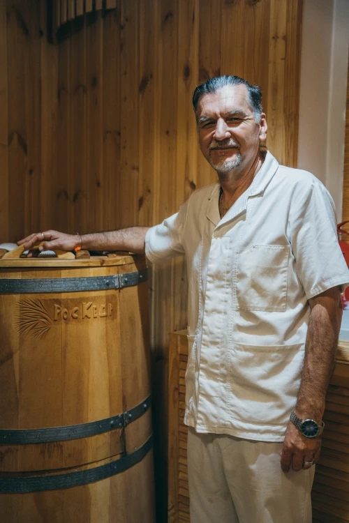
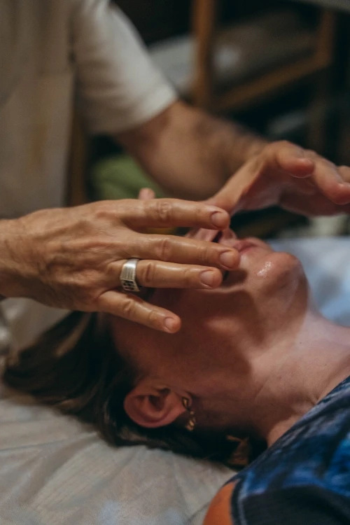
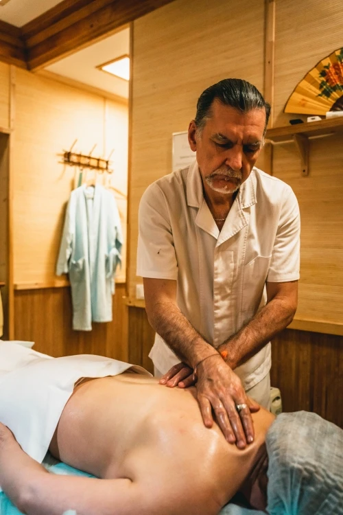
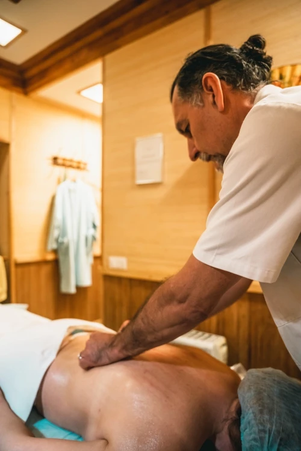
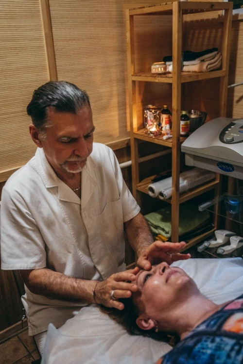

01
Причина, а не симптом
Мы не глушим боль и не выключаем воспаление на время. Задача — понять, почему тело «сломалось», и вернуть баланс в корне.
Консультации и индивидуальные программы очищения. 35 лет врачебного опыта. Москва, Петербург, Кипр, Индия — или онлайн.
Вы напишете ассистенту — я отвечу обычно в течение дня · консультация возможна онлайн



Я пришёл в аюрведу не «вместо» медицины, а после неё. Десять лет неотложной помощи, двадцать пять — частной практики, плюс регулярные обучения в Индии. Главный принцип, который я сохраняю со студенческих лет, — «Не навреди».
Я не индийский доктор и не пытаюсь им быть. Я российский врач, который глубоко изучил аюрведу в Индии и адаптировал её для людей, живущих в русском климате, с нашей едой и нашим уровнем стресса. Это важно: у нас общий язык, общий культурный код и одинаковое понимание, что такое «нормально себя чувствовать».
Российское медицинское образование, специализации и обучения по аюрведе в Индии. Ниже — оригиналы документов. Можно увеличить, чтобы рассмотреть.
Оригиналы сканов — скоро добавим. Для запроса копий пишите в WhatsApp или Telegram.
Современная западная медицина хорошо лечит острое и работает с симптомами. Аюрведа — это про другое: про причину, про тонкую настройку и про то, чтобы организм снова начал делать свою работу сам.
Мы не глушим боль и не выключаем воспаление на время. Задача — понять, почему тело «сломалось», и вернуть баланс в корне.
Травяные масла, порошки, топлёное масло, мёд, рис, свежие травы. Никакой химии, никаких побочных эффектов от «лекарства от лекарства».
Определяем вашу конституцию, степень зашлакованности, слабые системы — и собираем программу лично под вас. Шаблонов нет.
Это не «список диагнозов, которые я лечу» — это направления, где аюрведа даёт устойчивый результат, особенно в связке с классической медициной.
Всё начинается с консультации — без неё процедуры назначать нельзя. На ней я определю вашу конституцию, найду проблемные зоны и составлю программу.
Индивидуальная конституция, степень зашлакованности, рекомендации по питанию, коррекции, дополнительным обследованиям. Очно или онлайн.
Контроль программы, коррекция курса, работа с новыми запросами. Для тех, кто уже был на первичном приёме.
Традиционный масляный массаж всего тела. Убирает сухость, гармонизирует нервную систему, помогает при нарушениях сна, неврозах, остеохондрозе.
Непрерывный поток тёплого травяного масла на лоб. Одна из самых эффективных процедур при тревожности, бессоннице, хроническом стрессе.
Воздействие на энергетически активные точки. Снимает блоки, расслабляет мышцы, убирает болевые синдромы, нормализует работу внутренних органов.
Сухой массаж порошками с жиросжигающими травами. Антицеллюлитное и лимфодренажное действие. При ожирении, варикозе, сахарном диабете.
Выведение слизи и очищение носоглотки. Улучшает дыхание, насыщение крови кислородом, очищает все органы выше ключиц.
Работа с маслами и марма-точками лица. Помогает при хроническом напряжении челюстного сустава, головных болях напряжения, отёчности, признаках усталости кожи.
Короткая программа очищения на 5–7 дней. Подходит как знакомство или поддерживающий курс. Процедуры, травы, сопровождение каждый день.
Классическое очищение организма на 14 дней. Масла, массажи, травы, индивидуальная диета, сопровождение доктора каждый день.
Панчакарма на Кипре и в Керале — с проживанием, питанием и сопровождением. Подробнее о пакетах и датах — в блоке ниже.




Комплекс аюрведических процедур, приводящий в баланс весь организм. Подбирается индивидуально после консультации. Курс 1–3 недели. Именно Панчакарма позволяет справиться с хроническими заболеваниями, аутоиммунными проблемами, дисбалансами нейроэндокринной системы — и даёт ощутимый омолаживающий эффект.
Готовые программы с проживанием, питанием и полным сопровождением. Каждому участнику — индивидуальный план процедур и трав. Даты и места — по запросу.
Итоговая стоимость зависит от выбранных процедур, размещения и состава группы. Точную цену подбираем после консультации — напишите, обсудим.
Живые истории людей, которые прошли у меня курсы и консультации. Полные тексты и видео — ничего не вырезано.
С Григорием Григорьевичем работаем уже три года. Свёл случай — и, как известно, всё случайное не случайно. После первой панчакармы на длительное время восстановила пищеварение и иммунную систему: в зимний период не болела полгода вообще, ни насморка. Хотя вокруг в семье болели прилично и кашляли в лицо — маленький ребёнок был в то время в садике. Прошлый год был полон стрессов, и серьёзно сбойнули и иммунная, и вегетативная системы, и сердце (последствия стрессов — тахикардия). Григорий Григорьевич стал прямо скорой помощью и дважды буквально «вытаскивал» меня и мою нервную систему из состояния «на грани». Масляные массажи панчакармы приводили меня в баланс. Ощущала физически, как становилось легче и чувствовала себя самой собой. Такое ощущение уже и не помню, когда было — полное равновесие в настроении и в физическом теле. При общении с Григорием Григорьевичем понимаешь суть себя и своих накопившихся вопросов через понимание своей конституции и причин дисбалансов. Кроме самой помощи, с Григорием Григорьевичем невероятно приятно общаться. Чувствуешь поддержку и настоящее участие! Благодарю Вселенную, что на моём пути встретился такой удивительный доктор и человек!
Я веду приём не в одном кабинете — курсы Панчакармы требуют времени и правильной среды. Вот где сейчас можно попасть на консультацию и процедуры.
Основная база: регулярные консультации, процедуры, программы Панчакармы.
Выездные приёмные дни и индивидуальные программы по запросу.
Сезонные курсы Панчакармы в уютном отеле у моря.
Большие осенние программы Панчакармы в настоящих индийских клиниках.
Диагностика, подбор питания, трав, подготовка к будущему курсу.
16+ лет я возглавляю и помогаю открывать аюрведические центры. С удовольствием рассмотрю совместные проекты, выездные курсы и консультирование по запуску новых площадок — как в России, так и в других странах.
Написать по сотрудничествуС консультации — очно или онлайн, 60–90 минут, 5 500 ₽. На ней я определю вашу индивидуальную конституцию, найду проблемные зоны и скажу, нужна ли вам Панчакарма, отдельные процедуры или только коррекция питания.
Желательно собрать свежие анализы крови (общий, биохимия) и описания хронических диагнозов, если они есть. Подумайте, что беспокоит в первую очередь, и как давно. Ничего специально исключать из рациона не нужно. Если консультация онлайн — подготовьте спокойное место и стабильный интернет.
Нет, и никогда к этому не призываю. Аюрведа дополняет современную медицину: работает там, где таблетки только снимают симптом, и укрепляет организм, чтобы он сам справлялся. При острых состояниях всегда нужна аллопатическая помощь.
От 7 до 21 дня. В любой курс входит: индивидуальный план после консультации, ежедневные масляные процедуры, травы и масла, аюрведическая диета и сопровождение доктора каждый день. В выездные программы на Кипре и в Керале дополнительно включено проживание и питание.
В Москву я приезжаю выездными днями — обычно раз в 1–2 месяца. Актуальные даты и адрес присылаю по запросу в WhatsApp или Telegram. Если нужно срочно — возможна онлайн-консультация уже на этой неделе.
Это готовые пакеты: проживание, питание, процедуры и сопровождение включены. Перелёт и трансфер участники организуют самостоятельно, помогаем с визой в Индию. Группы небольшие, даты назначаются заранее — бронирование через WhatsApp.
Да. Острые состояния, хронические заболевания в стадии декомпенсации, беременность. Всё это обсуждается на первой консультации — при необходимости я дам рекомендации по дополнительному обследованию.
Очно я вижу больше (пульс, кожа, осанка). Онлайн — это прекрасная диагностика по симптомам, истории, питанию и образу жизни. Для пациентов из других городов и стран онлайн-формат работает отлично.
Очные процедуры — на месте, наличными или переводом. Онлайн-консультации и бронирование курсов — по договорённости в мессенджерах: переводы по России или международные — выбирайте удобный способ.
Самый быстрый способ — WhatsApp или Telegram. Пишите в свободной форме: что беспокоит, где находитесь, какой формат удобен. Ответим обычно в течение дня.
Подписаться на канал доктора —
@dr_chegorko
(новости о курсах, полезное про аюрведу, расписания)